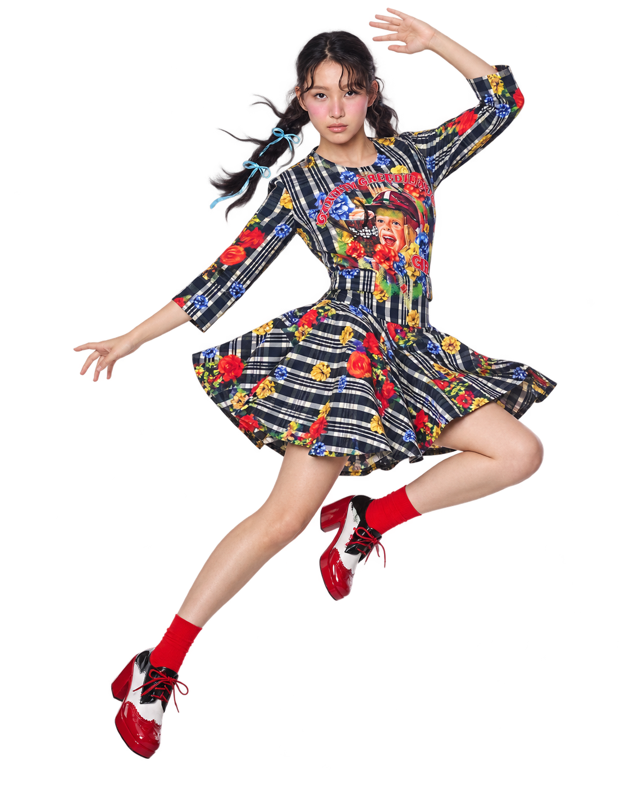

01 / CAMPAIGN
시선을 남기는 문장.
같은 메시지를 반복해, 태도를 선명하게.

거듭 화려하게.
더욱 나답게.
Project Overview
대담한 프린트와 컬러, 자신을 드러내는 자신감.
그리디어스가 쌓아온 화려한 자기표현에 ‘반복되는 시그니처’를 더합니다.
컬렉션의 표정은 새로워지고, 브랜드의 인상은 선명해지도록.
BE GREEDILOUS.
나의 취향에서 시작합니다.
나를 드러내는 데 주저하지 않습니다.
나다운 선택을 이어가며, 고유한 인상을 쌓습니다.
Brand Identity & Symbol
그리디어스의 첫 글자 G를 겹쳐, 표현이 쌓이는 모습을 만듭니다.
세 겹은 반복에 리듬을 부여하는 그래픽 규칙입니다.
나를 드러내는 하나의 G.
같은 형태를 거듭하다.
하나의 인상으로 남다.
고유한 G는 일관되게.
색과 크기, 겹침은 자유롭게.
반복된 표현이 하나의 인상을 만듭니다.
Brand Elements & Color
레드는 그리디어스의 중심을 잡고, 아이보리는 화려함을 드러냅니다.
깊이와 생동감을 더하는 두 가지 레드로 같은 G에 새로운 표정을 입힙니다.
색과 밀도를 바꿔보세요.
표현은 달라져도, 같은 G가 이어집니다.
Identity in Motion
겹치고, 퍼지고, 리듬을 만듭니다.
반복의 움직임으로 그리디어스의 화려함을 확장합니다.
브랜드 필름 · 디지털 캠페인
런웨이 스크린 · 팝업 공간
소셜 콘텐츠 · 쇼 초대장
겹침은 깊이를,
확산은 화려함을,
리듬은 활력을.
Brand Application
캠페인에서 보고, 제품에서 발견하고, 패키지로 다시 만나는 같은 서명.
매체에 맞게 변주하고, 하나의 브랜드로 연결합니다.
같은 메시지를 반복해, 태도를 선명하게.
가장 작은 접점에도, 고유한 G를 일관되게.
패턴의 면적을 바꿔, 같은 인상을 새롭게.
로고·패턴·적용 그래픽은 방향을 검토하기 위한 리브랜딩 시안입니다.
반복할수록, 더욱 나답게.
처음으로